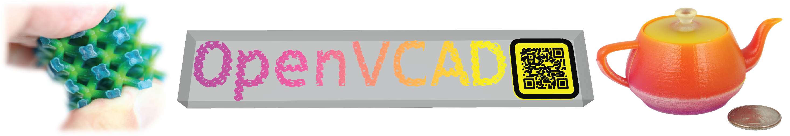

OpenVCAD Documentation#
Note
Learn more about the OpenVCAD project at matterassembly.org/openvcad.
OpenVCAD is an open-source volumetric multi-material geometry compiler that bridges the gap between modern multi-material 3D printing capabilities and computer-aided design (CAD) tools. OpenVCAD offers a novel workflow for designing objects with complex material distributions, enabling applications in fields like lattices, meta-materials, medical image printing, and robotics.
Python API Reference
C++ API Reference
Project